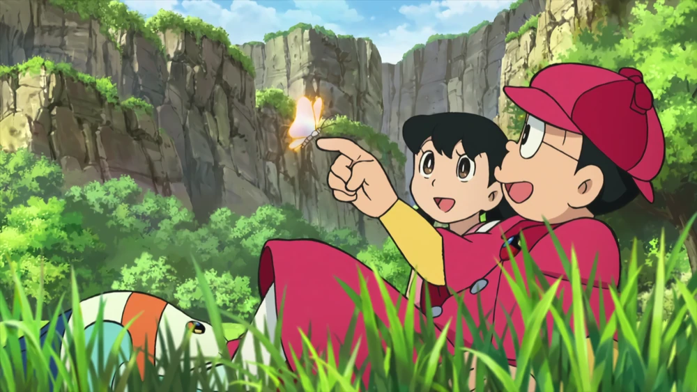

Nobita Nobi has a huge crush on his best friend and far Neighbor Shizuka Minamoto. Nobita has a romantic daydream about her, usually when he planning something on Shizuka, and hopes one day he would marry her. He tried his best to impress her with Doraemon gadget though, but usually his efforts was either dwarfed by Dekisugi just being close to Shizuka, or Gian and Suneo 'sabotaging' his plans. If he did managed to get Shizuka to be impressed, it didn't last long because of Suneo's and/or Gian's interferences or accidents he got, resulting in Shizuka fuming, or Doraemon scolding Nobita for going too far. Despite his chaotic efforts, he still somehow manages to marry Shizuka and have a son named Nobisuke Nobi Jr.
Shizuka on the other hand, secretly has a crush on Nobita. She starts off with a regular friendship, but eventually drew closer to him, and slowly developed a crush on him. This was seen in a movie "Doraemon: Nobita's Three Visionary Swordsmen", where Shizuka dreamed she was Princess Shizuka, married Nobita, and the person whom she dreamed of turned out was Silver Knight Nobitania. Nobita never tells his feelings to Shizuka and neither did Shizuka was shown doing the same to him.
